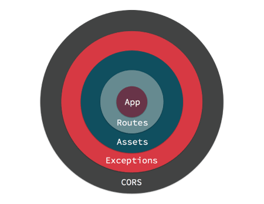

Middleware¶
Middleware objects give you the ability to ‘wrap’ your application in re-usable, composable layers of Request handling, or response building logic. Visually, your application ends up at the center, and middleware is wrapped aroud the app like an onion. Here we can see an application wrapped with Routes, Assets, Exception Handling and CORS header middleware.
When a request is handled by your application it enters from the outermost middleware. Each middleware can either delegate the request/response to the next layer, or return a response. Returning a response prevents lower layers from ever seeing the request. An example of that is the AssetMiddleware handling a request for a plugin image during development.

If no middleware take action to handle the request, a controller will be located and have its action invoked, or an exception will be raised generating an error page.
Middleware are part of the new HTTP stack in CakePHP that leverages the PSR-7 request and response interfaces. Because CakePHP is leveraging the PSR-7 standard you can use any PSR-7 compatible middleware available on The Packagist.
Middleware in CakePHP¶
CakePHP provides several middleware to handle common tasks in web applications:
Cake\Error\Middleware\ErrorHandlerMiddlewaretraps exceptions from the wrapped middleware and renders an error page using the Error & Exception Handling Exception handler.Cake\Routing\AssetMiddlewarechecks whether the request is referring to a theme or plugin asset file, such as a CSS, JavaScript or image file stored in either a plugin’s webroot folder or the corresponding one for a Theme.Cake\Routing\Middleware\RoutingMiddlewareuses theRouterto parse the incoming URL and assign routing parameters to the request.Cake\I18n\Middleware\LocaleSelectorMiddlewareenables automatic language switching from theAccept-Languageheader sent by the browser.Cake\Http\Middleware\SecurityHeadersMiddlewaremakes it easy to add security related headers likeX-Frame-Optionsto responses.Cake\Http\Middleware\EncryptedCookieMiddlewaregives you the ability to manipulate encrypted cookies in case you need to manipulate cookie with obfuscated data.Cake\Http\Middleware\CsrfProtectionMiddlewareadds CSRF protection to your application.
Using Middleware¶
Middleware can be applied to your application globally, or to individual routing scopes.
To apply middleware to all requests, use the middleware method of your
App\Application class. If you don’t have an App\Application class, see
the section on Adding the new HTTP Stack to an Existing Application for more information. Your application’s
middleware hook method will be called at the beginning of the request
process, you can use the MiddlewareQueue object to attach middleware:
namespace App;
use Cake\Http\BaseApplication;
use Cake\Error\Middleware\ErrorHandlerMiddleware;
class Application extends BaseApplication
{
public function middleware($middlewareQueue)
{
// Bind the error handler into the middleware queue.
$middlewareQueue->add(new ErrorHandlerMiddleware());
return $middlewareQueue;
}
}
In addition to adding to the end of the MiddlewareQueue you can do
a variety of operations:
$layer = new \App\Middleware\CustomMiddleware;
// Added middleware will be last in line.
$middlewareQueue->add($layer);
// Prepended middleware will be first in line.
$middlewareQueue->prepend($layer);
// Insert in a specific slot. If the slot is out of
// bounds, it will be added to the end.
$middlewareQueue->insertAt(2, $layer);
// Insert before another middleware.
// If the named class cannot be found,
// an exception will be raised.
$middlewareQueue->insertBefore(
'Cake\Error\Middleware\ErrorHandlerMiddleware',
$layer
);
// Insert after another middleware.
// If the named class cannot be found, the
// middleware will added to the end.
$middlewareQueue->insertAfter(
'Cake\Error\Middleware\ErrorHandlerMiddleware',
$layer
);
In addition to applying middleware to your entire application, you can apply middleware to specific sets of routes using Connecting Scoped Middleware.
Adding Middleware from Plugins¶
After the middleware queue has been prepared by the application, the
Server.buildMiddleware event is triggered. This event can be useful to add
middleware from plugins. Plugins can register listeners in their bootstrap
scripts, that add middleware:
// In ContactManager plugin bootstrap.php
use Cake\Event\EventManager;
EventManager::instance()->on(
'Server.buildMiddleware',
function ($event, $middlewareQueue) {
$middlewareQueue->add(new ContactPluginMiddleware());
});
PSR-7 Requests and Responses¶
Middleware and the new HTTP stack are built on top of the PSR-7 Request & Response Interfaces. While all middleware will be exposed to these interfaces, your controllers, components, and views will not.
Interacting with Requests¶
The RequestInterface provides methods for interacting with the headers,
method, URI, and body of a request. To interact with the headers, you can:
// Read a header as text
$value = $request->getHeaderLine('Content-Type');
// Read header as an array
$value = $request->getHeader('Content-Type');
// Read all the headers as an associative array.
$headers = $request->getHeaders();
Requests also give access to the cookies and uploaded files they contain:
// Get an array of cookie values.
$cookies = $request->getCookieParams();
// Get a list of UploadedFile objects
$files = $request->getUploadedFiles();
// Read the file data.
$files[0]->getStream();
$files[0]->getSize();
$files[0]->getClientFileName();
// Move the file.
$files[0]->moveTo($targetPath);
Requests contain a URI object, which contains methods for interacting with the requested URI:
// Get the URI
$uri = $request->getUri();
// Read data out of the URI.
$path = $uri->getPath();
$query = $uri->getQuery();
$host = $uri->getHost();
Lastly, you can interact with a request’s ‘attributes’. CakePHP uses these attributes to carry framework specific request parameters. There are a few important attributes in any request handled by CakePHP:
basecontains the base directory for your application if there is one.webrootcontains the webroot directory for your application.paramscontains the results of route matching once routing rules have been processed.sessioncontains an instance of CakePHP’sSessionobject. See Accessing the Session Object for more information on how to use the session object.
Interacting with Responses¶
The methods available to create a server response are the same as those available when interacting with Response Objects. While the interface is the same the usage scenarios are different.
When modifying the response, it is important to remember that responses are immutable. You must always remember to store the results of any setter method. For example:
// This does *not* modify $response. The new object was not
// assigned to a variable.
$response->withHeader('Content-Type', 'application/json');
// This works!
$newResponse = $response->withHeader('Content-Type', 'application/json');
Most often you’ll be setting headers and response bodies on requests:
// Assign headers and a status code
$response = $response->withHeader('Content-Type', 'application/json')
->withHeader('Pragma', 'no-cache')
->withStatus(422);
// Write to the body
$body = $response->getBody();
$body->write(json_encode(['errno' => $errorCode]));
Creating Middleware¶
Middleware can either be implemented as anonymous functions (Closures), or as
invokable classes. While Closures are suitable for smaller tasks they make
testing harder, and can create a complicated Application class. Middleware
classes in CakePHP have a few conventions:
- Middleware class files should be put in src/Middleware. For example: src/Middleware/CorsMiddleware.php
- Middleware classes should be suffixed with
Middleware. For example:LinkMiddleware. - Middleware are expected to implement the middleware protocol.
While not a formal interface (yet), Middleware do have a soft-interface or ‘protocol’. The protocol is as follows:
- Middleware must implement
__invoke($request, $response, $next). - Middleware must return an object implementing the PSR-7
ResponseInterface.
Middleware can return a response either by calling $next or by creating
their own response. We can see both options in our simple middleware:
// In src/Middleware/TrackingCookieMiddleware.php
namespace App\Middleware;
class TrackingCookieMiddleware
{
public function __invoke($request, $response, $next)
{
// Calling $next() delegates control to the *next* middleware
// In your application's queue.
$response = $next($request, $response);
// When modifying the response, you should do it
// *after* calling next.
if (!$request->getCookie('landing_page')) {
$response->cookie([
'name' => 'landing_page',
'value' => $request->here(),
'expire' => '+ 1 year',
]);
}
return $response;
}
}
Now that we’ve made a very simple middleware, let’s attach it to our application:
// In src/Application.php
namespace App;
use App\Middleware\TrackingCookieMiddleware;
class Application
{
public function middleware($middlewareQueue)
{
// Add your simple middleware onto the queue
$middlewareQueue->add(new TrackingCookieMiddleware());
// Add some more middleware onto the queue
return $middlewareQueue;
}
}
Adding Security Headers¶
The SecurityHeaderMiddleware layer makes it easy to apply security related
headers to your application. Once setup the middleware can apply the following
headers to responses:
X-Content-Type-OptionsX-Download-OptionsX-Frame-OptionsX-Permitted-Cross-Domain-PoliciesReferrer-Policy
This middleware is configured using a fluent interface before it is applied to your application’s middleware stack:
use Cake\Http\Middleware\SecurityHeadersMiddleware;
$headers = new SecurityHeadersMiddleware();
$headers
->setCrossDomainPolicy()
->setReferrerPolicy()
->setXFrameOptions()
->setXssProtection()
->noOpen()
->noSniff();
$middlewareQueue->add($headers);
New in version 3.5.0: The SecurityHeadersMiddleware was added in 3.5.0
Encrypted Cookie Middleware¶
If your application has cookies that contain data you want to obfuscate and protect against user tampering, you may can use CakePHP’s encrypted cookie middleware to transparently encrypt and decrypt cookie data via middleware. Cookie data is encrypted with via OpenSSL using AES:
use Cake\Http\Middleware\EncryptedCookieMiddleware;
$cookies = new EncryptedCookieMiddleware(
// Names of cookies to protect
['secrets', 'protected'],
Configure::read('Security.cookieKey')
);
$middlewareQueue->add($cookies);
Note
It is recommended that the encryption key you use for cookie data, is used exclusively for cookie data.
The encryption algorithms and padding style used by the cookie middleware are
backwards compatible with CookieComponent from earlier versions of CakePHP.
New in version 3.5.0: The EncryptedCookieMiddleware was added in 3.5.0
Cross Site Request Forgery (CSRF) Middleware¶
CSRF protection can be applied to your entire application, or to specific scopes
by applying the CsrfProtectionMiddleware to your middleware stack:
use Cake\Http\Middleware\CsrfProtectionMiddleware;
$options = [
// ...
];
$csrf = new CsrfProtectionMiddleware($options);
$middlewareQueue->add($csrf);
Options can be passed into the middleware’s constructor. The available configuration options are:
cookieNameThe name of the cookie to send. Defaults tocsrfToken.expiryHow long the CSRF token should last. Defaults to browser session.secureWhether or not the cookie will be set with the Secure flag. That is, the cookie will only be set on a HTTPS connection and any attempt over normal HTTP will fail. Defaults tofalse.fieldThe form field to check. Defaults to_csrfToken. Changing this will also require configuring FormHelper.
When enabled, you can access the current CSRF token on the request object:
$token = $this->request->getParam('_csrfToken');
New in version 3.5.0: The CsrfProtectionMiddleware was added in 3.5.0
Integration with FormHelper¶
The CsrfProtectionMiddleware integrates seamlessly with FormHelper. Each
time you create a form with FormHelper, it will insert a hidden field containing
the CSRF token.
Note
When using CSRF protection you should always start your forms with the
FormHelper. If you do not, you will need to manually create hidden inputs in
each of your forms.
CSRF Protection and AJAX Requests¶
In addition to request data parameters, CSRF tokens can be submitted through
a special X-CSRF-Token header. Using a header often makes it easier to
integrate a CSRF token with JavaScript heavy applications, or XML/JSON based API
endpoints.
The CSRF Token can be obtained via the Cookie csrfToken.
Adding the new HTTP Stack to an Existing Application¶
Using HTTP Middleware in an existing application requires a few changes to your application.
- First update your webroot/index.php. Copy the file contents from the app skeleton.
- Create an
Applicationclass. See the Using Middleware section above for how to do that. Or copy the example in the app skeleton.
Once those two steps are complete, you are ready to start re-implementing any application/plugin dispatch filters as HTTP middleware.
If you are running tests you will also need to update your tests/bootstrap.php by copying the file contents from the app skeleton.